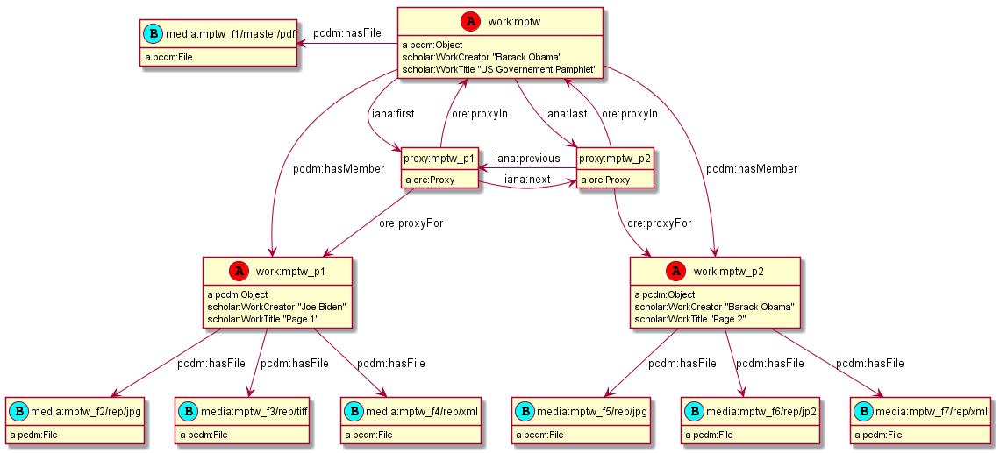
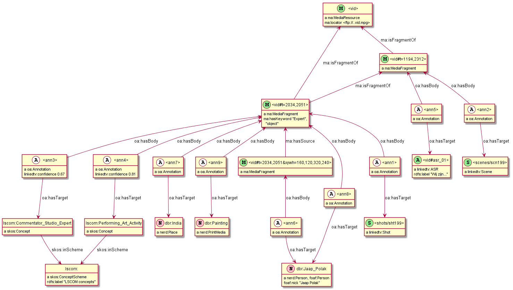

RDF by Example: rdfpuml for True RDF Diagrams, rdf2rml for R2RML Generation
Vladimir Alexiev
SWIB'16, Bonn, Germany, 2016-11-29
2D presentation O for overview, ? for help).Continuous HTML. Publications
Table of Contents
- Motivation
- Diagram Features
- Examples: Getty CONA: Contribs and Sources
- Getty CONA: Iconographic Authority
- American Art Collaborative: Mapping Museum Data to CIDOC CRM
- FRBRoo: Don Quixote Example (Europeana EFAP Task Force)
- EHRI: Person Network
- Multisensor: Video Annotation & Text Annotation (NIF)
- OpenAnnotation: Example 44
- Duraspace PCDM Metadata
- Video Annotation: LinkedTV NISV Use Case
- ICIJ Offshore Leaks (RDF by Ontotext)
- Offshore Leaks Evolution
- R2RML Generation
- Future Work
Motivation
RDF is a graph data model:
- The best way to understand RDF data schemas (ontologies, application profiles, RDF shapes) is with a diagram.
- Many RDF visualization tools exist, but they either
- Focus on large graphs (where the details are not easily visible), or
- Visualization results are not satisfactory, or
- Manual tweaking of the diagrams is required
Developed a tool rdfpuml that makes true diagrams directly from Turtle examples
Benefits:
- Guarantees consistency between said (triple statements) and shown (diagram)
- Lets you focus on domain modeling rather than diagram layouting/tweaking
- Enables efficient source control
- Saves you lots of effort
Simple Example: Getty CONA: Object Discovery
Source Turtle (puml: are diagram control triples, explained further)
cona:456-thing crm:P12i_was_present_at cona:456-discovery-123. cona:456-discovery-123 a crmx:Discovery; crm:P2_has_type <cona/production/discovery>; crm:P4_has_time-span cona:456-discovery-123-date. cona:456-discovery-123-date a crm:E52_Time-Span; crm:P82a_begin_of_the_begin "1800"^^xsd:gYear; crm:P82b_end_of_the_end "1850"^^xsd:gYear. ######################################## <cona/production/discovery> a puml:Inline.

Simple Example: Generated PlantUML
Takes care of many hairy details, eg node name sanitization, collecting property names & values, inlining, Reification/Association, replacing () with [] (puml quirk)…
@startuml hide empty methods hide empty attributes hide circle skinparam classAttributeIconSize 0 class cona_456_discovery_123 as "cona:456-discovery-123" cona_456_discovery_123 : a crmx:Discovery class cona_456_discovery_123_date as "cona:456-discovery-123-date" cona_456_discovery_123 --> cona_456_discovery_123_date : crm:P4_has_time-span cona_456_discovery_123 : crm:P2_has_type cona:production/discovery cona_456_discovery_123_date : a crm:E52_Time-Span cona_456_discovery_123_date : crm:P82a_begin_of_the_begin "1800"^^xsd:gYear cona_456_discovery_123_date : crm:P82b_end_of_the_end "1850"^^xsd:gYear class cona_456_thing as "cona:456-thing" cona_456_thing --> cona_456_discovery_123 : crm:P12i_was_present_at @enduml
Diagram Features
Diagram readability is a prime concern. Some measures:
- Shorten URLs aggressively. Some prefixed names you see in the diagram are not valid Turtle
- Sort properties by name (
rdf:typecomes first) - Show literal types, use Turtle shortcuts (eg 1 instead of "1"^^xsd:integer)
- Collect property values together; collect "parallel" properties together
- Inlining: show object in the subject node, not as separate node
- Types and literals are inlined automatically
Inline resource (optional label): used often for lookup values
<cona/event/competition> a puml:Inline. cona_contrib:10000000 a puml:Inline; rdfs:label "VP".
Inline property: show all objects of a property inlined
fn:annotationSetFrame a puml:InlineProperty.
- Namespace
puml:used for diagram control (usually written after####)- Follows Dan Connolly's approach Circles and arrows diagrams using stylesheet rules (W3C 2005)
Collect "Parallel" Property Names
- Multiple property instances between nodes are collected in one arrow and shown as several labels
- Inverse arrows work fine

Arrow Customization
Customize arrow for one relation or all prop instances
<subj> puml:$dir-$head-$line <obj> . <prop> puml:arrow puml:$dir-$head-$line .
$dir: left, right, up, down (default)$head: none="", tri="|>", star="*", o="o" (default=normal arrow)$line: dashed (default is solid)- Each part is optional. Example:
cona:456-production puml:left cona:456-motivation-123.

Stereotypes and Colored Circles
Stereotype: UML lingo for «guillemetted name» and colored circle.
- Set on individual node or whole class
iso:ThesaurusArray puml:stereotype "(A,red)". gvp:GuideTerm puml:stereotype "(G,green)". gvp:Concept puml:stereotype "(C,lightblue)".

Reification
<s> <p> <o>represented as node with 3 addressing props plus extra data
<node> a <ReificationClass>; <subjectProp> <s>; <shortcutProp> <p>; <objectProp> <o>; # extra data, eg dct:created, dct:creator
- RDF Reification is used most often (
rdf:Statement) - CIDOC CRM (with extension
crmx:propertyorbmo:PX_property) - Property Reification Vocabulary allows us to express this data formally:
| ReificationClass | subjectProp | shortcutProp | objectProp | prop (shortcut) |
|---|---|---|---|---|
| rdf:Statement | rdf:subject | rdf:predicate | rdf:object | any prop |
| crm:E13_Attribute _Assignment | crm:P140_assigned _attribute_to | crmx:property | crm:P141_assigned | any CRM prop |
| crm:E14_Condition _Assessment | crm:P34_concerned | crmx:property | crm:P35_has_identified | crm:P44_has_condition |
| crm:E15_Identifier _Assignment | crm:P140_assigned _attribute_to | crmx:property | crm:P37_assigned, crm:P38_deassigned | crm:P1_is_identified_by, crm:P102_has_title |
| crm:E16_Measurement | crm:P39_measured | crmx:property | crm:P40_observed _dimension | crm:P43_has_dimension |
| crm:E17_Type _Assignment | crm:P41_classified | crmx:property | crm:P42_assigned | crm:P2_has_type or subprop |
Reification Nodes
- Automatically discover reifications as per the previous table and make PlantUML Association Class
- Show addressing properties with arrows (← : →) pointing to the subject, shortcut, object
- Limit: no more than 2 reifications per relation (and the second one is ugly). So use
puml:noReifyto avoid making reification

Examples: Getty CONA: Contribs and Sources
Aggressive URL shortening, collecting multiple values, value comments
Getty CONA: Iconographic Authority
Arrow direction, reification

American Art Collaborative: Mapping Museum Data to CIDOC CRM
One option how to map "cast after" (from the same mold)

FRBRoo: Don Quixote Example (Europeana EFAP Task Force)

EHRI: Person Network
Jewish social networks: CIDOC CRM and AgRelOn

Multisensor: Video Annotation & Text Annotation (NIF)

Multisensor: Social Network Analysis
Global influence and reachability

Multisensor: Image Annotation with OpenAnnotation+FISE
FISE (Stanbol) is used to express Confidence

Multisensor: News Item and its Translation
Stereotypes (circle, «italic»), arrow direction

Multisensor: FrameNet Embedded in NIF
Made with PlantUML "by hand", not rdfpuml. Uses PlantUML Packages

Multisensor: FrameNet+NIF (Part 1)

Multisensor: FrameNet+NIF (Part 2)

OpenAnnotation: Example 44
Blank nodes, RDF lists
Duraspace PCDM Metadata
- Portland Common Data Model for diglib metadata (Fedora, Islandora..)
- Reference Diagrams made by hand, takes a lot of time (eg Postcard)
- Proposed diagrams with rdfpuml (tracked as duraspace/pcdm#46)

Video Annotation: LinkedTV NISV Use Case
Video Annotation: Generated Diagram

ICIJ Offshore Leaks (RDF by Ontotext)

Offshore Leaks Evolution
Model is evolving as we unravel more of the data (github "image diff")

R2RML Generation
R2RML is the W3C standard for RDBMS->RDF conversion
- It is quite verbose and requires semantic experience to write
- What if we could describe RDBMS mapping in our examples?
- We can: include SQL queries and embedded field names
rdf2rdb generates R2RML transformations from examples:
- Saves about 15x in complexity
- Ensures consistency of model and actual conversion
Getty Museum: Exhibitions Model
Getty Exhibitions: Generated R2RML
Getty Exhibitions: Relational Data
constituents
| constituentid | constituent |
| 1 | 'Getty Museum' |
| 2 | 'MoMA' |
| 3 | 'LACMA' |
exhibitions
| exhibitionid | exhdepartment | exhtitle | displaydate | beginisodate | endisodate |
| 123 | 53 | 'Getty through the ages' | 'October 2016' | '2016-10-01' | '2016-10-30' |
exhvenuesxrefs
| exhvenxref | exhid | conid | conaddrid | approved | dispord | displaydate | beginisodate | endisodate |
| 202 | 123 | 2 | 102 | 1 | 1 | 'Early Oct 2016' | '2016-10-01' | '2016-10-15' |
| 203 | 123 | 3 | 103 | 1 | 2 | 'Late Oct 2016' | '2016-10-16' | '2016-10-30' |
exhvenobjxrefs
| exhvenuexrefid | objectid | catalognumber | begindispldateiso | enddispldateiso | displayed |
| 202 | 1001 | 'cat 1001' | '2016-10-01' | '2016-10-15' | 1 |
| 203 | 1001 | 'cat 1001' | '2016-10-16' | '2016-10-30' | 1 |
| 202 | 1002 | 'cat 1002' | '2016-10-01' | '2016-10-15' | 1 |
Getty Exhibitions: Converted RDF Data
Getty Museum: Museum Object

Future Work
R2RML works great for RDBMS, but how about other sources?
Working to extend rdf2rml to generate:
ClinicalTrials.gov: Clinical Study Results (XML)
Dun & Bradstreet (Fix-Width) to Fin. Ind. Business Ontology
Global Legal Entity Indentifier (XML) to FIBO
Farther Future
- Modularize & package better
- Integrate in Emacs org-mode: write Turtle, see diagram
- Extend RDF by Example to describe & generate RDF Shapes
- Another tool to visualize RDF Shapes (SHACL and Shex)